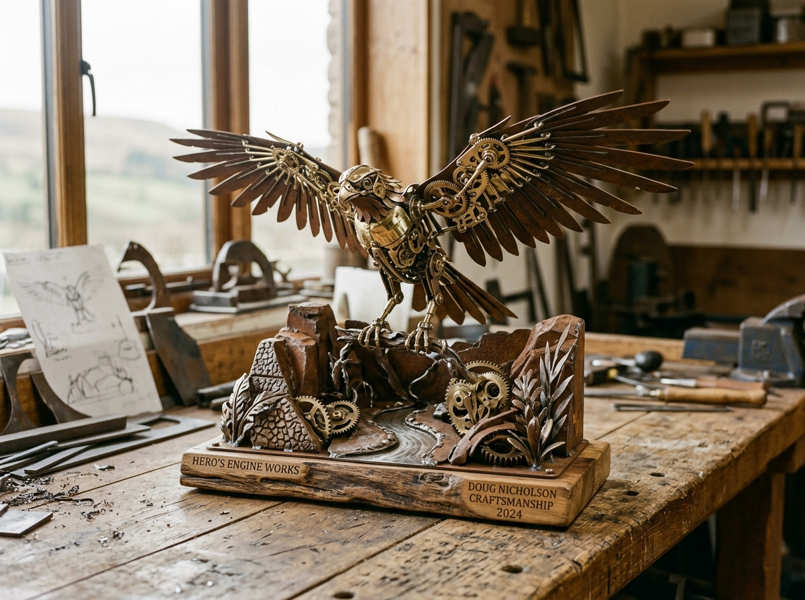
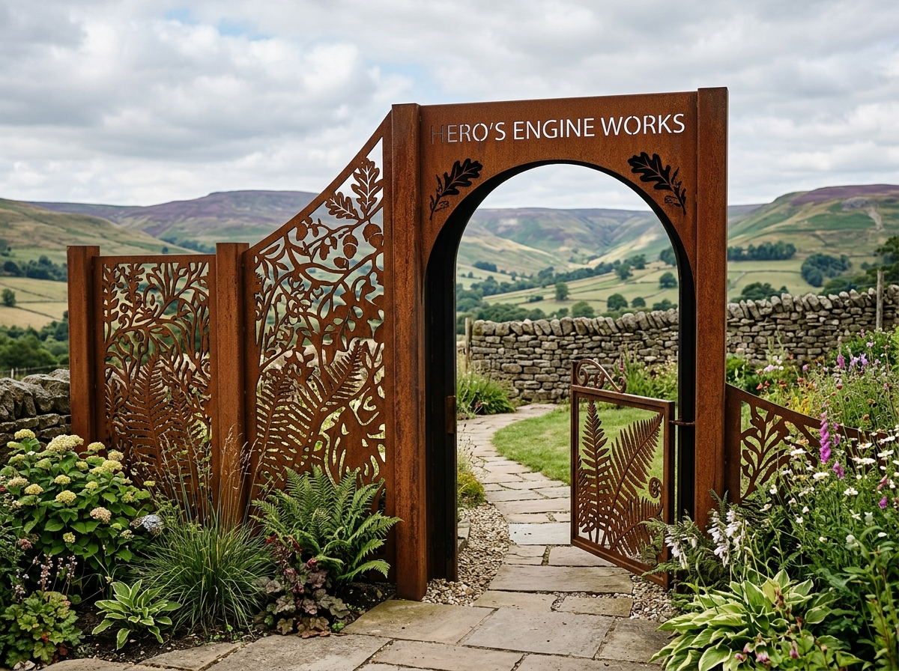
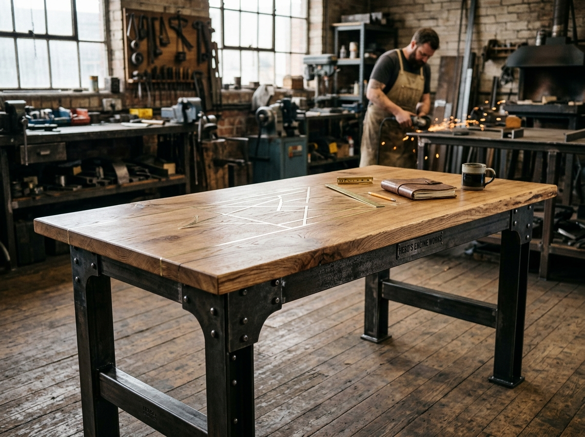

Peak Kinetic Fauna
A kinetic sculpture celebrating Peak District avian movement with exposed brass gear trains.
Forged mild steel and brass

A kinetic sculpture celebrating Peak District avian movement with exposed brass gear trains.
Forged mild steel and brass

Architectural garden screening with laser and plasma cut Peak District fern profiles.
Weathering Corten steel (4mm plate)

Heavyweight dining bench featuring exposed turnings, hex fasteners, and solid British timber.
Machined structural steel and English quarter-sawn oak